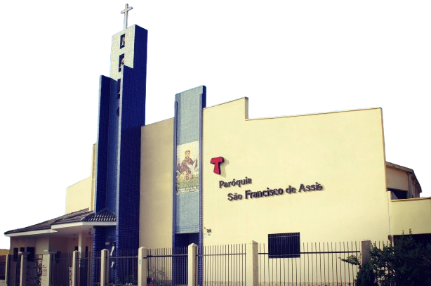

Paróquia São Francisco de Assis
Com a Paz e a Simplicidade de São Francisco
Com a Paz e a Simplicidade de São Francisco
Fundada em 1957, a Paróquia São Francisco de Assis tem sido lugar de fé, acolhimento e união para toda a comunidade. Inspirados pela vida e pelo exemplo de São Francisco de Assis, nosso padroeiro, celebramos sua memória no dia 04 de Outubro, dia dedicado ao santo que é conhecido por sua humildade, amor à natureza e dedicação aos mais necessitados.
Ao longo dos anos, nossa paróquia tem promovido atividades pastorais,eventos comunitários, missas e grupos de oração, oferecendo a todos a oportunidade de crescer na fé e vivenciar o amor de Deus de forma plena.
